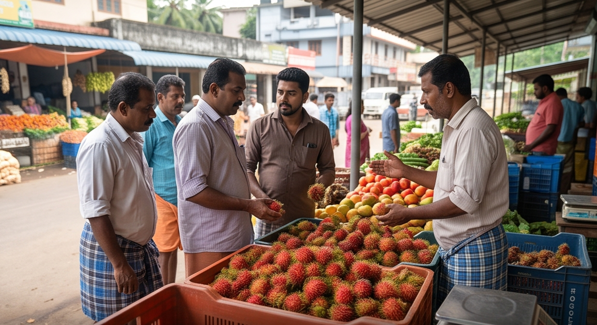
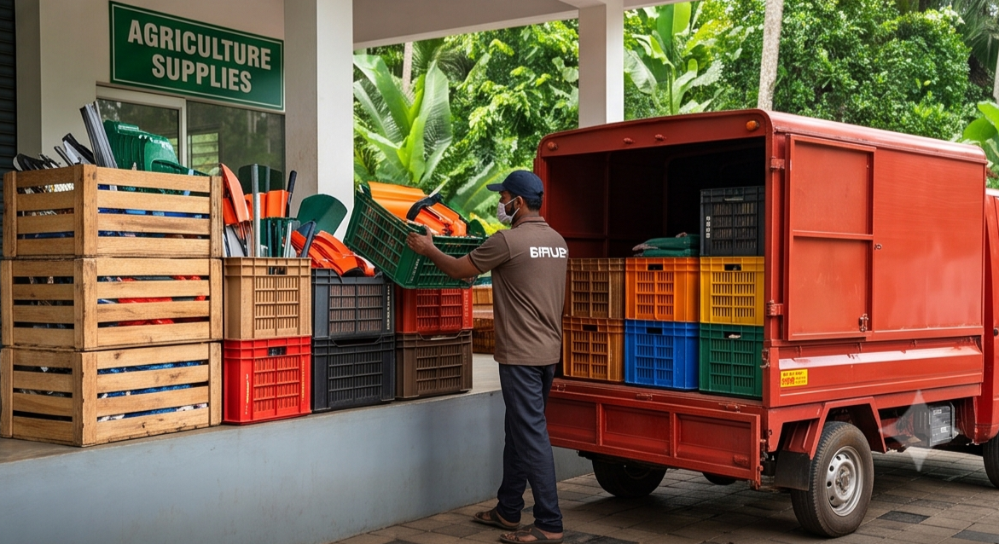

RambuConnect is a specialized digital ecosystem built to empower the entire Rambutan cultivation landscape. By bridging the gap between rural producers and global commercial channels, we eliminate unnecessary middlemen to maximize profitability. Our integrated network provides businesses with direct access to certified high-yield planting stocks, reliable trade transactions, premium farming supplies, and modern logistics solutions. Join our growing community today to transform your local agricultural workflows into scalable, sustainable market growth.

Connect directly with wholesale buyers, access seasonal price trends, and share modern cultivation insights to boost crop yield and field efficiency.

Source freshly harvested, premium quality Rambutan fruit supplies directly from verified regional orchards without unnecessary intermediary channels.

Showcase certified elite fruit grafts, display high-yield sapling cross-breeds, and interact directly with farmers expanding their orchard operations.

Promote professional harvesting tools, packing containers, organic fertilizers, and protective canopy netting directly to dedicated growers.